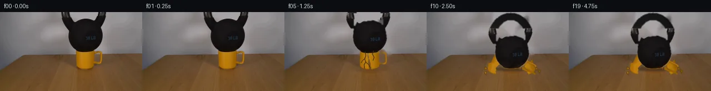

![首帧]()

Round 00
2026-11-05T10:31:22.177096+00:00像素候选变化代码 +269/−0inspection 更新
pixels c8590b5031be32c1 · code 9f6d1cd4f7b6ae31
查看本轮 generate.py 真实 diff
--- previous/generate.py +++ current/generate.py @@ -0,0 +1,269 @@ +from pathlib import Path + +import cv2 +import numpy as np +from PIL import Image, ImageDraw + +import artifact_io + + +ROOT = Path(__file__).resolve().parent +W, H = 256, 144 +N = 20 + + +def polygon_mask(points): + m = np.zeros((H, W), np.uint8) + cv2.fillPoly(m, [np.asarray(points, np.int32)], 255) + return m + + +def composite(dst, src, alpha): + a = np.clip(alpha.astype(np.float32), 0, 1)[..., None] + return np.clip(dst.astype(np.float32) * (1 - a) + src.astype(np.float32) * a, 0, 255).astype(np.uint8) + + +def tint_composite(dst, color, alpha): + layer = np.empty_like(dst) + layer[:] = np.asarray(color, np.uint8) + return composite(dst, layer, alpha) + + +def transformed_layer(source, mask, center, dx, dy, angle, scale=1.0): + mat = cv2.getRotationMatrix2D(center, angle, scale) + mat[0, 2] += dx + mat[1, 2] += dy + layer = cv2.warpAffine(source, mat, (W, H), flags=cv2.INTER_LINEAR, + borderMode=cv2.BORDER_CONSTANT, borderValue=(0, 0, 0)) + alpha = cv2.warpAffine(mask, mat, (W, H), flags=cv2.INTER_LINEAR, + borderMode=cv2.BORDER_CONSTANT, borderValue=0).astype(np.float32) / 255.0 + return layer, alpha + + +def aa_polyline(frame, points, color, thickness=1): + cv2.polylines(frame, [np.asarray(points, np.int32)], False, color, thickness, + lineType=cv2.LINE_AA) + + +def make_masks(src): + yy, xx = np.mgrid[:H, :W] + # The visible kettlebell consists of an upper annular handle and a rounded body. + outer = ((xx - 151.0) / 41.5) ** 2 + ((yy - 20.0) / 49.0) ** 2 <= 1.0 + inner = ((xx - 151.0) / 27.0) ** 2 + ((yy - 20.0) / 36.0) ** 2 < 1.0 + handle_shape = outer & ~inner & (yy <= 27) + body_shape = polygon_mask([(134, 11), (145, 15), (160, 13), (173, 18), + (181, 29), (184, 48), (179, 63), (168, 73), + (142, 73), (130, 65), (124, 53), (123, 37), + (127, 23)]) > 0 + allowed = handle_shape | body_shape + gray = cv2.cvtColor(src, cv2.COLOR_RGB2GRAY) + dark = gray < 104 + bell = (allowed & dark).astype(np.uint8) * 255 + bell = cv2.morphologyEx(bell, cv2.MORPH_CLOSE, np.ones((3, 3), np.uint8)) + # A soft one-pixel edge preserves the source anti-aliasing. + bell_alpha = cv2.GaussianBlur(bell, (3, 3), 0) + + r, g, b = [src[..., i].astype(np.int16) for i in range(3)] + yellow = (r > 128) & (g > 55) & (b < 58) & (r > 1.28 * g) + mug_allowed = np.zeros((H, W), np.uint8) + cv2.rectangle(mug_allowed, (136, 65), (170, 105), 255, -1) + cv2.ellipse(mug_allowed, (169, 82), (15, 14), 0, -88, 88, 255, 6) + mug = (yellow & (mug_allowed > 0)).astype(np.uint8) * 255 + mug = cv2.morphologyEx(mug, cv2.MORPH_CLOSE, np.ones((3, 3), np.uint8)) + mug_alpha = cv2.GaussianBlur(mug, (3, 3), 0) + + # Broader masks are used only for background reconstruction. + clean_bell = ((handle_shape | body_shape).astype(np.uint8) * 255) + clean_mug = np.zeros((H, W), np.uint8) + cv2.rectangle(clean_mug, (135, 64), (171, 106), 255, -1) + cv2.ellipse(clean_mug, (170, 82), (16, 15), 0, -95, 95, 255, 7) + return bell_alpha, mug_alpha, clean_bell, clean_mug + + +def reconstruct_background(src, clean_bell, clean_mug): + hole = cv2.max(clean_bell, clean_mug) + hole = cv2.dilate(hole, np.ones((7, 7), np.uint8), iterations=1) + # TELEA is confined to the source setup; pixels elsewhere remain exact. + clean = cv2.inpaint(cv2.cvtColor(src, cv2.COLOR_RGB2BGR), hole, 5, cv2.INPAINT_TELEA) … diff truncated; 182 more lines …